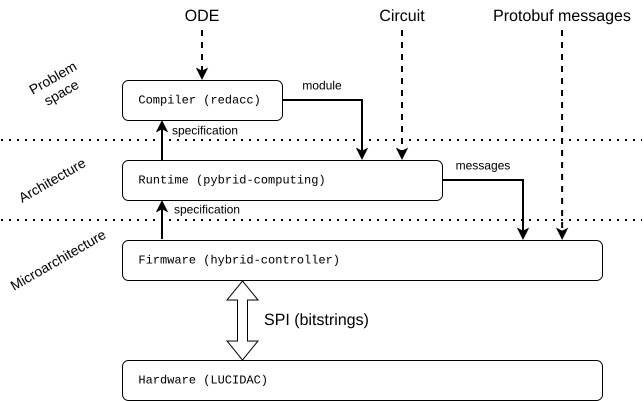

Abstractions¶
Just like in digital computing, software stacks for hybrid analog computing
are organised as a sequence of layers of abstraction. A stack — think of
the OSI network stack as a familiar example — is an ordered set of
components in which each layer consumes the services of the layer below it
and exposes a tighter, more problem-oriented interface to the layer above.
What changes between the two worlds is not the layering pattern, but what
is being abstracted: in a digital stack each layer hides ever more
machinery for fetching and executing instructions, whereas in LUCIstack
each layer hides ever more machinery for configuring and driving an analog
circuit.
The illustration from the index page lists the layers and
their components for LUCIstack:

The mapping to a conventional digital stack is close enough to be useful as a mental model:
| Level | Digital computing | LUCIstack |
Abstraction |
|---|---|---|---|
| Microarchitecture | BIOS / board firmware | hybrid-controller |
Expose the analog substrate via a stable, low-level control API; hide circuit-level peculiarities and calibration |
| Architecture | Assembly | pybrid (entity object representation) |
A small, explicit "instruction set" — here a set of configurable elements and switches — manipulated directly by the programmer |
| OS | pybrid (runtime, sessions, proxy) |
Connection management, time-sharing of a device, scheduling and resource management | |
| Problem space | Compiler, e.g. gcc / clang |
redacc |
Lowering a high-level, problem-oriented language to the architectural layer through an intermediate representation |
| Algorithms | Mathematical problems, e.g. ODEs | The mathematical model of the underlying computation, written in a high-level script or DSL | |
| Service / platform | Cloud, batch scheduler | analog cloud | Multi-tenant access to a pool of compilers, simulators, and physical devices, accessible over the network |
In the remainder of this page we briefly review each abstraction with examples. For deeper detail refer to the documentation of the individual components.
Microarchitecture¶
On the lowest level, every LUCIDAC and REDAC is a combination of digital and
analog hardware in which the former configures and orchestrates the latter.
Fundamentally, the machines operate with electrical signals inside a fixed
voltage range, which the stack normalises to machine units of
[-1.0, 1.0]. The firmware on the on-board Teensy microcontroller hides the
peculiarities of the electrical circuitry — component tolerances, the need
for calibration, settling times — and presents a clean, asynchronous control
surface to anything above it.
hybrid-controller provides services and routines that guarantee a circuit
configuration sees a consistent hardware setup with predictable performance:
ADC/DAC traffic, signal routing, the run-cycle state machine (reset → ic →
operate → halt), and the front panel. It also abstracts over the physical
realisation of the machine — for instance, presenting a logical 32×16
crossbar even when it is implemented as several smaller 8×16 switch
matrices on the board.
The role is the analog counterpart of board firmware in a digital system: the layer at which an abstract specification first meets physics.
Architecture¶
Like a digital CPU, every analog computer has a fixed inventory of computational elements — integrators, multipliers, summing junctions, coefficient sources — together with configurable interconnect that wires them together. A canonical example is connecting two integrators into a feedback loop to model exponential decay (see Simulating nuclear decay in THAT, First Steps).
In digital computing the assembly language is the textual surface that exposes a CPU's instruction set and registers. Analog computers, however, have no step-based execution: time is continuous and there is no program counter. The appropriate counterpart is therefore not an instruction stream but an entity-object model — a programmatic representation of every configurable switch, coefficient, and computing element of the machine.
pybrid-computing (pybrid for short) builds this model. A connected
LUCIDAC or REDAC appears as a tree of Python objects whose properties map
one-to-one onto the device's configurable items:
# retrieve the entity object model for the LUCIDAC (i.e. "cluster")
computer = controller.computer
carrier = computer.carriers[0]
cluster = carrier.clusters[0]
# set initial conditions for integrators (integrators 0, 1)
cluster.m0block.elements[0].ic = 0.42
cluster.m0block.elements[1].ic = 0 # 0 by default
The state of the entity model is serialisable into a compact, protobuf-based
representation — the .apb module format — which serves as the analog
equivalent of an object file. The same wire format both stores a
configuration (along with information about the hardware structure it
targets) and transports it to the firmware, which materialises it on the
device. A fragment of the JSON-equivalent view looks like this:
{
"entity": {
"path": "/04-E9-E5-18-16-43/0/M0"
},
"itorConfig": {
"elements": [
{ "ic": -0.42, "k": 10000 },
{ "idx": 1, "k": 10000 }
]
}
}
Beyond the entity model, pybrid also fulfils the role of an operating
system for the device: it manages transport connections (USB serial, TCP,
UDP) through a native networking extension, multiplexes access via
Session-based abstractions so that a single machine can be time-shared
between callers, and exposes maintenance tasks such as calibration and
device introspection. Users working at this layer can write fully featured
analog programs without any knowledge of the underlying electrical
realisation.
Problem space¶
One of the "native" computations for analog computers is the integration of
systems of ordinary differential equations (ODEs). At the top of the stack,
redacc exposes a small scripting language, analang, in which such
systems — together with their external inputs, outputs and initial
conditions — are written directly in mathematical form:
use math;
in isin;
in icos;
probe h(t);
probe square;
let diff[h, t, t](t) = -h(t);
let square = 0.8 * (icos * h(t) - diff[h, t](t) * isin);
let h(t: 0) = 1.0;
analang is more expressive than plain systems of ODEs: it permits
self-references and recursive definitions
and therefore covers the full range of computations an analog machine can
realise. In this sense, analang is Turing-complete.
From analang source, redacc compiles down to an intermediate
representation built as a custom MLIR dialect, analog-IR. The role of
this IR is directly analogous to
LLVM IR in the digital world: it
gives the compiler a hardware-agnostic, optimisable representation of the
problem onto which front-ends (ODE notations, SymPy via the pyredacc
front-end, future graphical editors) and back-ends (LUCIDAC, REDAC, the
THAT ngspice simulator) attach independently. For the example above the
lowered IR is:
module {
analog.module @harmonic, 1.000000e+04 {
%cst = analog.constant -1.000000e+00
%cst_0 = analog.constant -4.200000e-01
%cst_1 = analog.constant 0.000000e+00
%cst_2 = analog.constant 1.000000e+00
%0 = analog.sum %1
%1 = analog.mul %cst_2, %3
%2 = analog.itor %0, %cst_0, 1.000000e+04
%3 = analog.itor %4, %cst_1, 1.000000e+04
%4 = analog.sum %5
%5 = analog.mul %2, %cst
analog.probe 0 = %2 * 1.000000e+00 + 0.000000e+00, ""
}
}
analog-IR already sits a step above the bare architectural layer: it
describes an abstract analog circuit in terms of a small, fixed set of
operations (itor, mul, sum, constant, probe, …) without yet
committing to a concrete machine. Subsequent redacc passes perform
placement and routing onto a target device and emit the corresponding
pybrid module — closing the loop back to the architectural layer.
Service and platform¶
Sitting above the compiler is the "analog cloud" (cli client: analogcli), the cloud-side platform that
exposes the entire stack as a network service. Users submit analang
sources or compiled .apb modules through a REST API; the cloud schedules
the job onto a worker pool (compilation, simulation, or physical
execution), keeps track of devices and their availability, and returns
results without the caller ever needing direct access to hardware. Its
role corresponds to that of a managed compute service or HPC job scheduler
in the digital world: the same engineering reasons that motivate
centralised compute platforms — sharing scarce hardware, managing
authentication and quotas, batching workloads — apply just as much to a
pool of analog computers.
Why the analogy matters¶
Each interface between layers — REST at the top, a protobuf module format
in the middle, an asynchronous device protocol at the bottom — is a stable
contract that lets the layers evolve independently. New front-ends plug
into redacc; new hardware targets plug in as redacc back-ends;
alternative runtimes can speak the same firmware protocol. The closeness
to the digital stack is therefore not merely pedagogical: it is a
deliberate design choice that lets analog computing inherit decades of
hard-won lessons about modular system design.